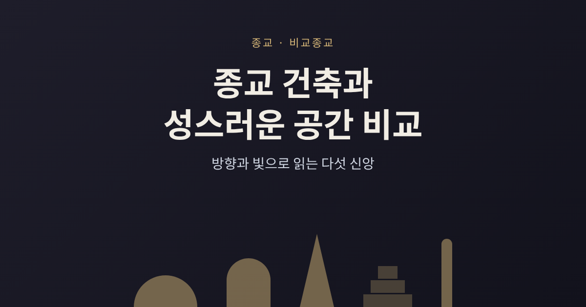
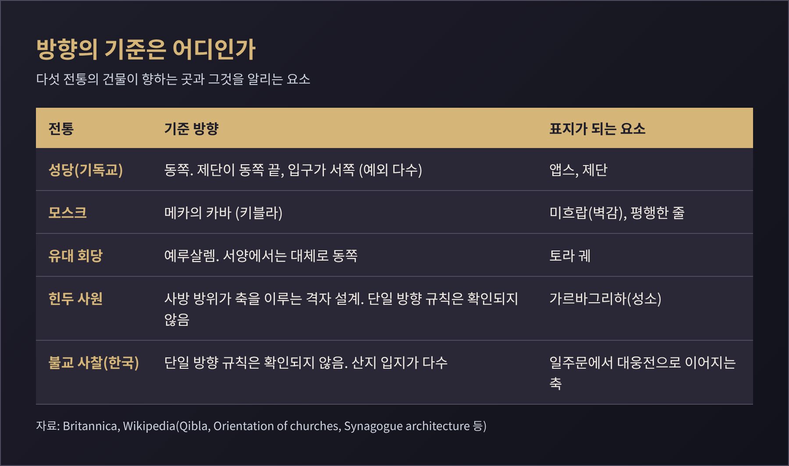
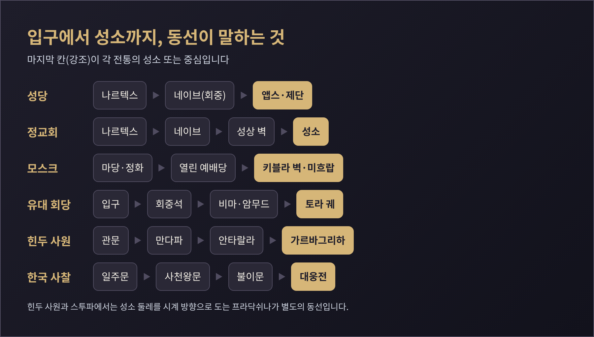
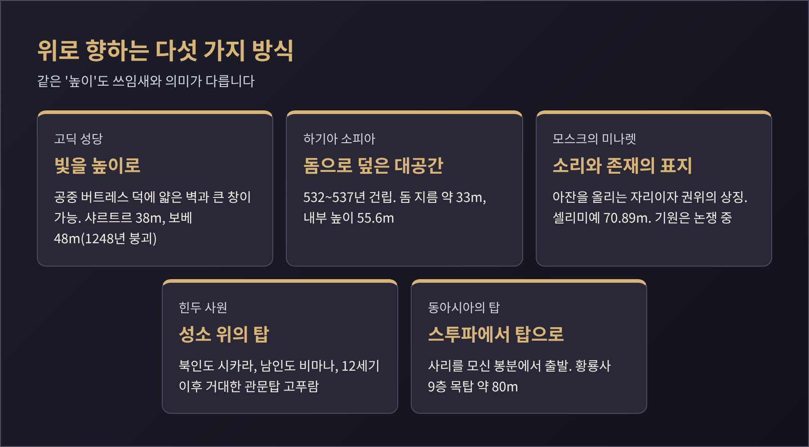
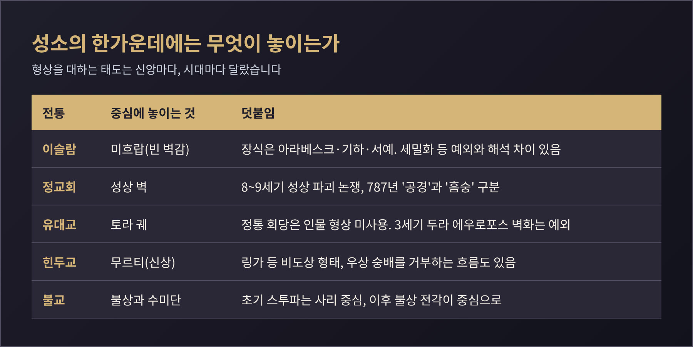
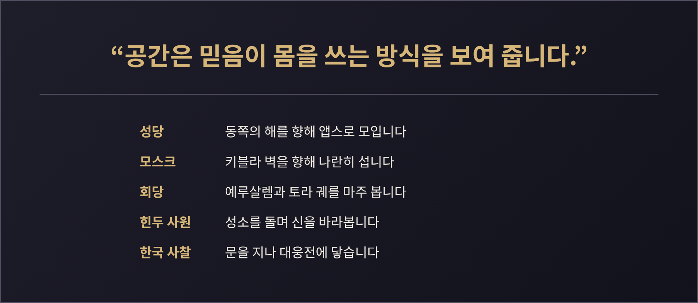

세 줄 요약
오늘은 성당, 모스크, 불교 사찰, 힌두 사원, 유대 회당이 공간으로 무엇을 말하는지 비교해 보려 합니다. 방향, 빛과 수직성, 성소와 회중의 배치, 형상의 허용 여부를 차례로 살피겠습니다. 비교종교와 종교학의 교양 시선에서 쓴 글이며, 어느 신앙의 우열이나 교리의 진위는 다루지 않습니다.
건물의 방향은 가장 단순하면서도 가장 강한 언어입니다.
이슬람의 기준은 키블라입니다. 메카의 카바를 향하는 방향입니다. 모스크에서는 키블라 쪽 벽에 미흐랍이라는 작은 아치형 벽감을 내어 이를 표시합니다. 신자들은 이 벽과 나란한 줄을 지어 섭니다. 흥미로운 점이 있습니다. 전승에 따르면 무함마드와 메디나의 무슬림은 처음에 예루살렘을 향해 예배했고, 이주 후 약 15~16개월쯤 꾸란 구절에 따라 방향을 카바로 바꾸었다고 합니다. 메카 시절의 방향은 카바, 예루살렘, 혹은 둘 다라는 설로 갈려 확정되지 않았습니다.
방향을 정확히 맞추는 일은 생각보다 어려웠습니다. 중세 천문학자들은 구면삼각법까지 동원했지만 경도 오차가 컸습니다. 15세기 학자 알마크리지의 기록에는 카이로 한 도시에 90°, 127°, 141°, 180° 등 여러 키블라가 나옵니다. 오늘날에도 1953년에 세워진 워싱턴 D.C. 이슬람센터가 동북쪽을 향하는 것을 두고, 대권 방식으로 북/북동이 맞다는 입장과 남동이라는 반론이 오갔습니다. 북미 무슬림 다수는 북/북동을 택했습니다. 정확히 겨누는 방식과 대체로 그 방향을 향하는 방식, 두 가지를 모두 인정하는 학자들의 태도도 눈여겨볼 만합니다.
기독교의 기준은 동쪽입니다. 제단은 동쪽 끝에, 입구는 서쪽에 둡니다. 방향을 뜻하는 영어 'orientation'이 동쪽(oriens)에서 나왔을 정도입니다. 초기 기독교인이 동쪽을 향해 기도하자 테르툴리아누스는 비신자들이 태양 숭배로 오해했다고 적었습니다. 후대 교부들은 재림이 동쪽에서 온다는 해석을 덧붙였습니다. 다만 이 규칙은 처음부터 있던 것이 아닙니다. 4세기 공인 이전에는 방향이 중요하지 않았고, 로마의 오래된 교회들은 오히려 입구가 동쪽에 있었습니다. 로마가 동쪽 제단 배치를 채택한 것은 8~9세기입니다. 예외도 많습니다. 콘스탄티누스 시대 성묘교회는 제단이 서쪽 끝이었고, 독일의 일부 대성당은 11세기까지 서쪽 제단을 유지했습니다. 영국 옛 교회를 조사한 연구들도 대부분이 '대략' 동쪽일 뿐이며, 편차의 상당 부분은 지형과 이웃 건물 때문이라고 보았습니다.
유대 회당의 기준은 예루살렘입니다. 서양의 회당은 동쪽을, 예루살렘 동쪽 지역의 회당은 서쪽을 향합니다. 방향이 반드시 정확할 필요는 없습니다. 토라 궤는 예루살렘 성전의 지성소를 상징하며, 궤를 마주 보면 예루살렘을 향하도록 놓는 것이 일반적입니다. 시리아의 두라 에우로포스 회당(3세기 중엽)의 토라 감실도 서쪽 벽에 있어 예루살렘을 바라봅니다.

예전엔 방향이 곧 규칙이었다고 흔히 생각합니다. 지금 자료를 보면 규칙과 현실 사이에는 늘 간격이 있었습니다. 힌두 사원과 불교 사원에 대해서는 이 글이 참고한 자료에 '이 방향을 향한다'는 단일 규칙이 확인되지 않아 표에도 그렇게 적었습니다. 힌두 사원은 사방의 방위가 평면의 축을 이루는 격자 설계(바스투 푸루샤 만달라)를 따릅니다.
같은 '성스러운 중심'이라도 사람과의 거리를 두는 방식이 다릅니다.
기독교 성당은 로마의 바실리카에서 출발했습니다. 중앙 홀인 네이브에 회중이 모이고, 동쪽 끝 앱스는 성직자의 자리입니다. 서쪽 입구 쪽 나르텍스는 참회자와 세례받지 않은 이들이 머무는 공간이었습니다. 동방 정교회는 여기서 한 걸음 더 나아가 이코노스타시스라는 성상 벽으로 네이브와 성소를 나눕니다. 예루살렘 성전에서 지성소가 휘장 뒤에 있던 구조에 견주어지곤 합니다. 중앙 문은 평소에는 닫혀 있고, 이 벽은 천장까지 닿지 않아 사제의 낭송이 신자에게 들립니다.
모스크는 반대에 가깝습니다. 예배당은 가구가 거의 없는 열린 바닥입니다. 중심에는 미흐랍이 있지만 보통 비어 있고, 이맘이 앞줄에 홀로 섭니다. 회중은 키블라 벽과 평행한 줄로 늘어섭니다. 몸을 씻는 정화는 예배당 밖, 마당이나 입구에서 합니다. 남녀 공간은 칸막이, 별도 방, 격자 난간이 있는 2층 등 모스크마다 다릅니다. 비무슬림의 방문도 지역에 따라 허용되기도 하고 제한되기도 합니다. 메카와 메디나는 비무슬림에게 닫혀 있고, 터키나 미국에는 방문객을 맞는 곳이 많습니다.
유대 회당에서는 토라 궤가 중심입니다. 궤는 계단을 올라 닿는 단 위에 있고, 앞에 '영원한 등불'이 걸립니다. 독서대인 비마는 궤 앞이나 건물 중앙에 놓이며, 기도를 인도하는 이가 서는 암무드는 궤를 향합니다. 역사적으로 여성석은 2층 갤러리가 흔했으나 전통에 따라 다릅니다. 인도 코친 회당처럼 특별한 날 갤러리에 두 번째 비마를 두기도 했습니다.
힌두 사원은 안으로 한 걸음씩 들어가는 구조입니다. 가장 안쪽이 '자궁의 방'이라 불리는 가르바그리하이고, 신상이나 신의 상징을 모십니다. 그 앞에 기둥 있는 홀 만다파가 이어집니다. 신자는 성소 둘레를 시계 방향으로 돌고(프라닥쉬나) 신을 '보는 것'(다르샨) 자체를 의례로 삼습니다. 불교의 스투파에도 반드시 도는 길이 있습니다. 걷는 동선이 곧 의례입니다.
한국 사찰은 문을 통과하며 성소에 닿습니다. 일주문, 사천왕문, 불이문을 지나 대웅전에 이릅니다. 대부분 산지에 자리 잡았는데, 선불교와 풍수, 산악 신앙이 배경으로 꼽힙니다.

높이는 하늘을 향한 시선이지만 그 방식은 다섯 갈래입니다.
고딕 성당은 빛을 설계의 중심에 놓았습니다. 11세기 말 첨두아치와 늑골 궁륭이 등장했고, 생드니와 상스가 이를 공중 버트레스와 체계적으로 결합했습니다. 벽이 높고 얇아지자 창이 커졌습니다. 생드니의 쉬제 수도원장은 "가장 빛나는 창들의 놀랍고 끊김 없는 빛"이라고 적었습니다. 신학적 교의가 더 많은 빛을 요구했다는 설명도 있습니다. 높이 경쟁은 무모하기도 했습니다. 샤르트르 대성당이 38m인데, 48m까지 올린 보베 대성당은 1248년 무너졌고 이후 그보다 높이려는 시도는 없었다고 합니다.
비잔틴의 해답은 돔이었습니다. 하기아 소피아는 유스티니아누스 1세 때인 532~537년에 지어졌습니다. 돔의 지름은 약 33m이고 내부 높이는 55.6m입니다. 지진으로 일부가 무너져 재건되었고 562년 다시 봉헌되었습니다. 이 건물은 1453년 모스크로 바뀌어 미나렛이 더해졌고, 1935년 박물관이 되었다가 2020년 다시 모스크가 되었습니다. 이 마지막 결정에는 유네스코와 세계교회협의회 등의 비판도 있었습니다. 한 건물이 두 신앙의 공간 문법을 모두 입은 사례입니다.
모스크의 돔은 하늘의 궁륭, 곧 지상과 신성을 잇는 상징으로 설명되곤 합니다. 691년의 예루살렘 바위의 돔은 모스크가 아닌 성지였지만 이후 돔 건축의 선례가 되었습니다. 미나렛은 기원이 논쟁거리입니다. 20세기 초에는 시리아 교회의 첨탑이나 메소포타미아 지구라트에서 영향을 받았다는 설이 우세했고, 1989년 블룸은 9세기 아바스 시대에 나타난 탑이 처음부터 아잔용은 아니었다고 주장했습니다. 초기 모스크에는 미나렛이 없었고 아잔은 집 문간이나 지붕에서 했습니다. 오늘날은 예배당 안 마이크로 방송해 미나렛 스피커로 내보내기도 합니다. 미나렛은 소리의 높이이자, 이슬람의 존재와 건립한 통치자의 권위를 알리는 표지였습니다.
힌두 사원은 성소 위로 탑을 올립니다. 북인도의 시카라는 높고 안으로 휘어지고, 남인도의 비마나는 더 낮은 피라미드 모양입니다. 남인도에서는 12세기 이후 거대한 관문탑 고푸람이 발달해 성소 탑을 작아 보이게 하기도 했습니다. 불교의 스투파는 사리를 모신 봉분에서 출발해 동아시아에서 탑(pagoda)이 되었습니다. 한국에서는 돌탑이 많았고, 황룡사 9층 목탑은 높이 약 80m로 도시의 전망대 구실을 했다고 합니다.

성소의 한가운데에 무엇이 놓이는지를 보면 신앙마다 대답이 갈립니다.
이슬람 모스크의 중심에는 형상이 없습니다. 미흐랍은 방향을 알리는 빈 벽감입니다. 장식은 아라베스크, 기하학 무늬, 서예가 중심입니다. 다만 이 원칙에도 폭이 있습니다. 꾸란 자체는 생물 묘사를 직접 금하지 않고 우상숭배를 비판하며, 형상 금지는 이후 편찬된 하디스에 나오고 해석이 필요하다는 것이 학계의 정리입니다. 9세기 이후 수니 주석가들이 점차 일괄 금지로 읽었다고 합니다. 궁정 벽화, 페르시아 세밀화 같은 예외도 있고, 시아와 수피 쪽은 상대적으로 덜 엄격합니다.
기독교에서는 성상 자체가 논쟁이었습니다. 비잔틴 성상 파괴 논쟁(8~9세기)에서 파괴파는 출애굽기의 제2계명을 근거로 들었고, 옹호파는 성육신으로 그리스도가 보이는 몸이 되었으므로 묘사가 가능하다고 맞섰습니다. 787년 제2차 니케아 공의회는 성상에 '공경'을 드리되 신성에만 드리는 '흠숭'과 구분했고, 843년 성상 공경이 회복되었습니다. 정교회 성소의 성상 벽은 이 역사의 결과물로 볼 수 있습니다.
유대교는 더 복합적입니다. 오늘날 정통 회당에서는 다윗의 별, 유다의 사자, 꽃과 열매 같은 문양이 일반적이고 인물 형상은 쓰지 않습니다. 그런데 3세기 두라 에우로포스 회당은 이삭의 결박, 모세, 출애굽 같은 성서 장면을 3단 벽화로 채웠습니다. 남은 장면이 58개입니다. 학자들은 이 발견이 유대교의 형상 금지에 대한 지나치게 좁은 해석을 바로잡는다고 봅니다.
힌두 사원의 중심에는 무르티가 있습니다. 봉헌 의례로 신의 현존을 청하고, 사원에서는 이를 귀한 손님처럼 깨우고 씻기고 꾸밉니다. 상징으로 보는 이도 있고 봉헌 후 실제 임재로 보는 이도 있습니다. 링가나 살리그라마 같은 비도상적 형태도 있고, 아리아 사마지처럼 우상 숭배를 거부하는 개혁 운동도 있습니다. 불교는 초기 스투파가 도상 없이 사리를 모시는 형태였다가, 이후 불상을 모시는 전각이 중심이 되었습니다. 한국 사찰의 불상은 수미산을 상징하는 수미단 위에 놓입니다.

이 비교에는 한계가 있습니다.
첫째, 위의 모든 설명은 일반적 경향입니다. 각 신앙 안에도 지역과 학파, 시대에 따라 다른 건물이 있습니다. 둘째, 이 글은 브리태니커와 스미소니언 자료, 그리고 위키백과 같은 2차 자료를 교차한 것으로, 일부 서술은 원문 대조까지 하지 못했습니다. 셋째, 건물의 해석은 신자의 이해와 연구자의 설명이 다를 수 있습니다. 기독교의 동향 이유, 미나렛의 기원, 형상 금지의 범위처럼 논쟁이 이어지는 대목은 양쪽을 함께 적었습니다.
정리하면 이렇습니다.
성당은 동쪽의 해를, 모스크는 먼 곳의 한 지점을, 회당은 사라진 성전을 향합니다. 성소를 갈라 두는 곳도, 한 줄로 서서 마주하는 곳도, 둘레를 걸으며 바라보는 곳도 있습니다. 빛과 높이를 쓰는 방식도, 형상을 대하는 방식도 모두 달랐습니다.
"공간은 믿음이 몸을 쓰는 방식을 보여 줍니다."
낯선 성소 앞에 서게 되신다면, 어느 쪽을 향해 지어졌는지부터 살펴보시길 권합니다. 그 한 가지만 알아도 건물이 말을 걸어올 것입니다.
